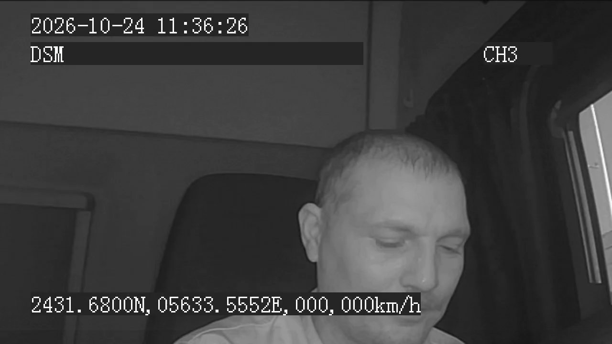
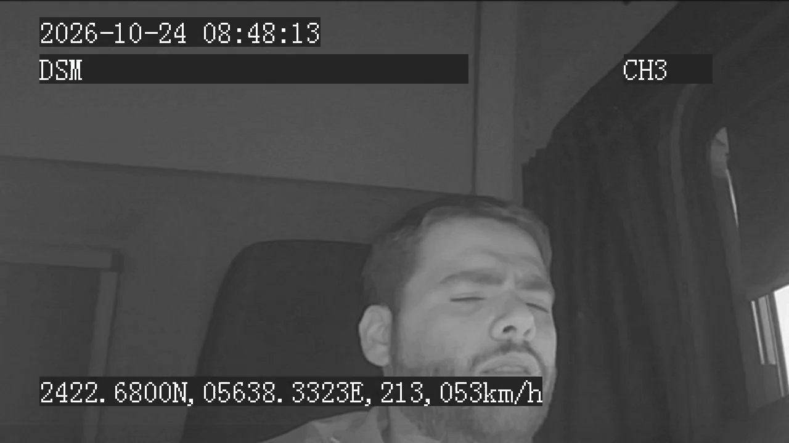
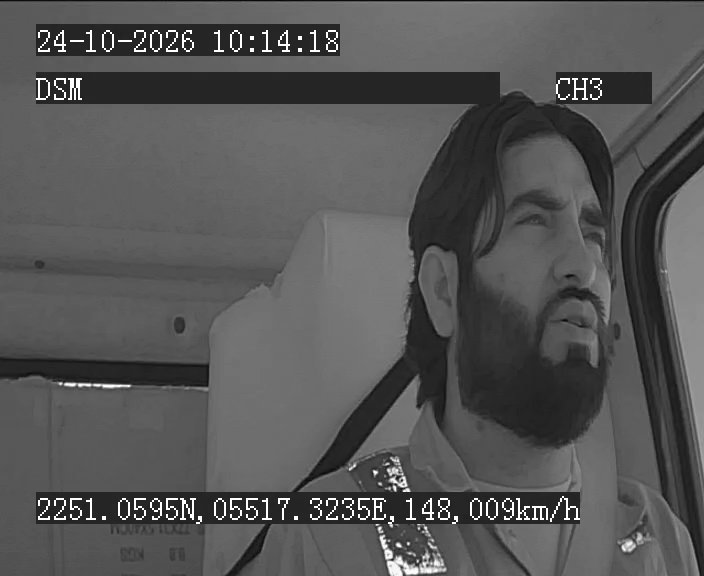
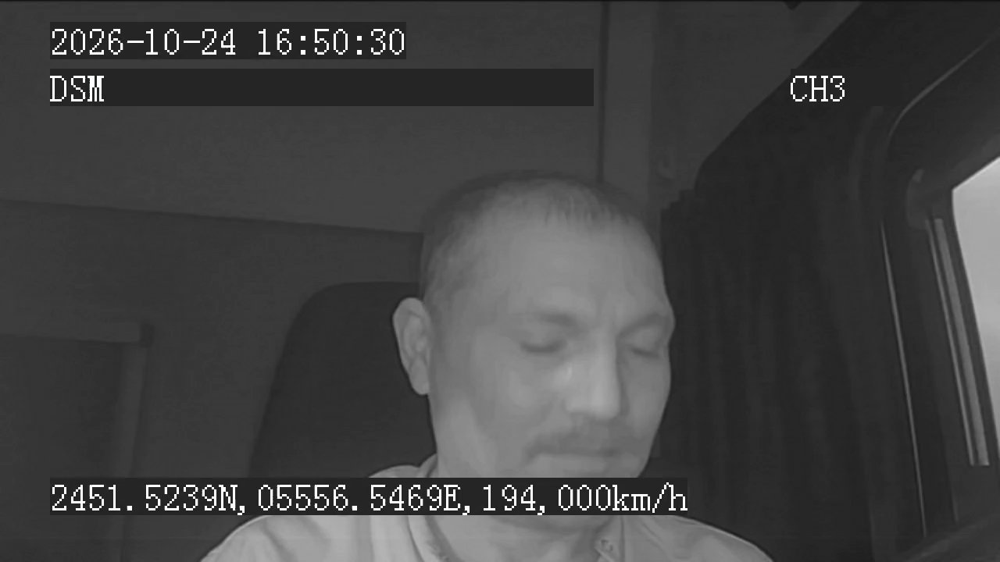
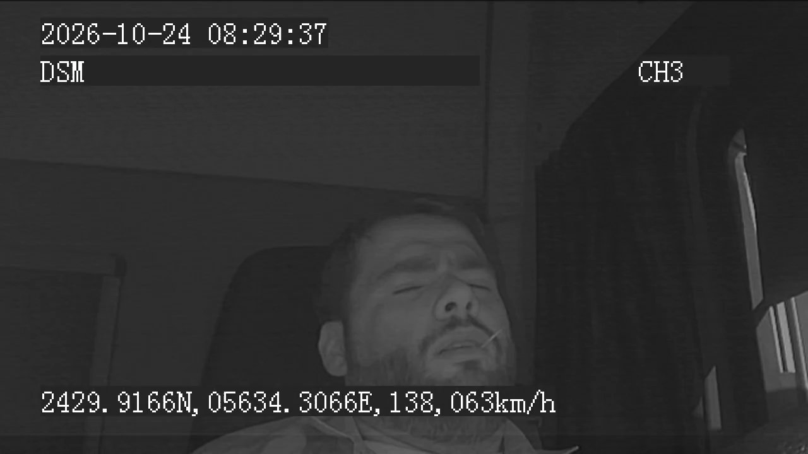
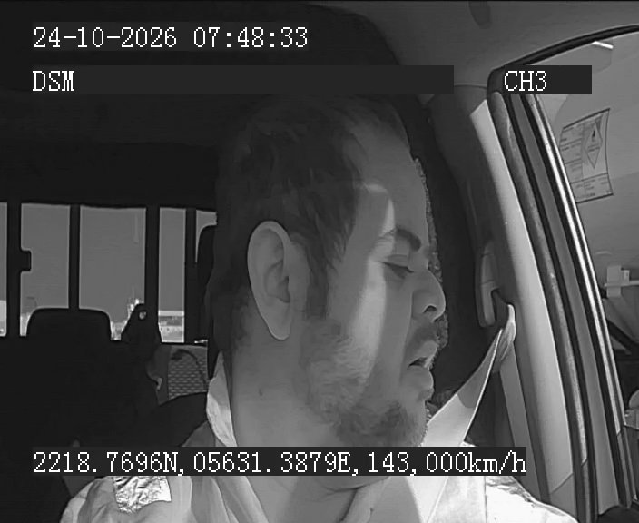
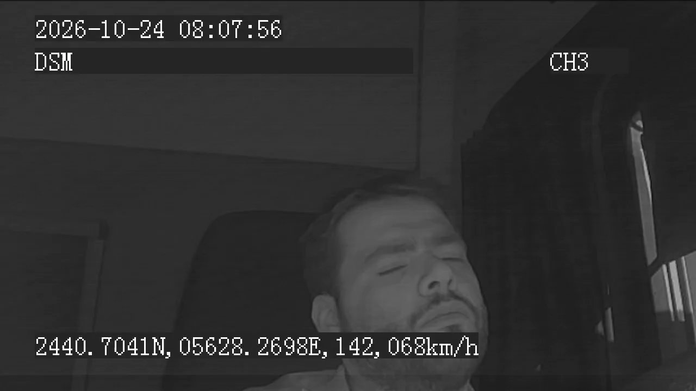
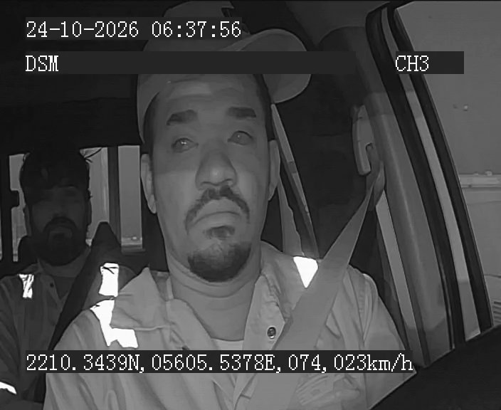
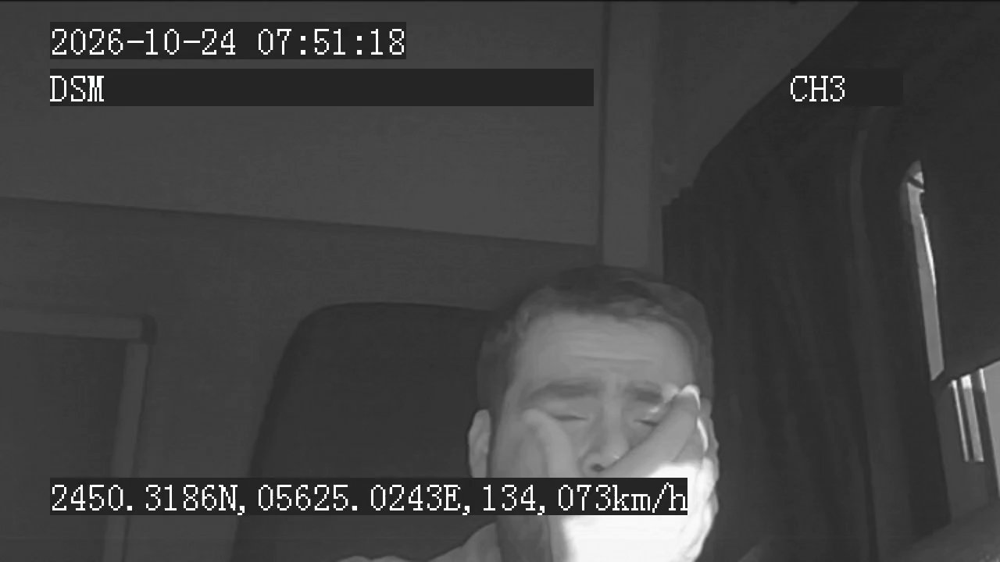
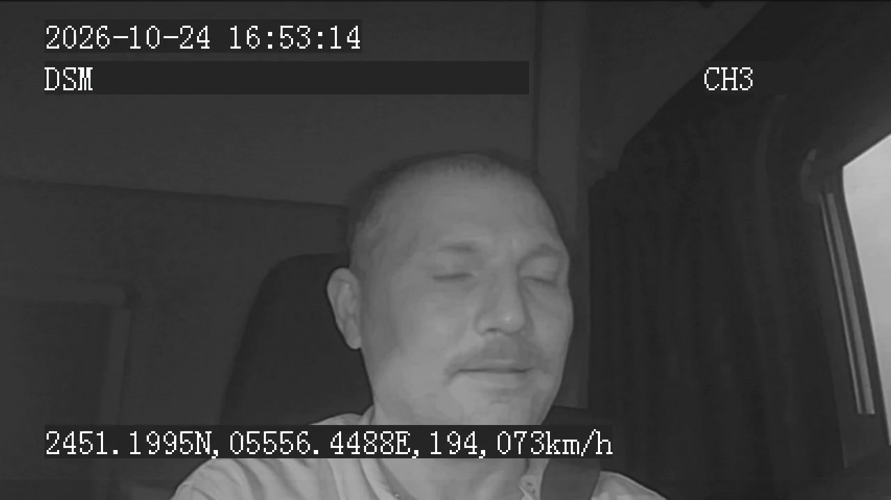

ADAS/DMS risk assessment — vehicles with an id longer than 7 digits — clips recorded 2026-10-24
| # | Vehicle ID | Plate No. | Date/Time | Camera | Warning Type | Possibility | Frame |
|---|---|---|---|---|---|---|---|
| 1 | 096895479219 | AW17-4583MH | 2026-10-24 11:36:28 | driver | Fatigue (DMS) | 95.0% |  |
| 2 | 096895479219 | AW17-4583MH | 2026-10-24 08:48:15 | driver | Fatigue (DMS) | 90.0% |  |
| 3 | 008060824232 | GPS32063-9838WA | 2026-10-24 10:14:28 | driver | Fatigue (DMS) | 82.0% |  |
| 4 | 096895479219 | AW17-4583MH | 2026-10-24 16:50:33 | driver | Fatigue (DMS) | 75.0% |  |
| 5 | 096895479219 | AW17-4583MH | 2026-10-24 08:29:39 | driver | Fatigue (DMS) | 70.0% |  |
| 6 | 005070625937 | GPS22550-5364MA | 2026-10-24 07:48:41 | driver | Fatigue (DMS) | 64.0% |  |
| 7 | 096895479219 | AW17-4583MH | 2026-10-24 08:07:59 | driver | Fatigue (DMS) | 62.0% |  |
| 8 | 005070628501 | GPS22539-4542WK | 2026-10-24 06:38:06 | driver | Fatigue (DMS) | 60.0% |  |
| 9 | 096895479219 | AW17-4583MH | 2026-10-24 07:51:20 | driver | Fatigue (DMS) | 60.0% |  |
| 10 | 096895479219 | AW17-4583MH | 2026-10-24 16:53:16 | driver | Fatigue (DMS) | 60.0% |  |
096895479219 — AW17-4583MH,
95.0% (driver camera, 2026-10-24 11:36:28).
096895479321 — AW22-718YW: 208 clips096895479219 — AW17-4583MH: 101 clips096895479570 — AW09-853YM: 37 clips096895479520 — AW24-5447BM: 28 clips096895418216 — AW15-5020HK: 27 clipsMethod. Possibility is the detected risk from the ML pipeline — front camera (FCW) uses
YOLOv8n lead-vehicle tracking with time-to-collision and closing rate; driver camera (fatigue) uses MediaPipe
face landmarks with eye-aspect-ratio closure runs and yawns. A camera that is blocked, black, or an
undecodable file scores 0% — no footage means no risk can be assessed, so those clips are never ranked.
Plate numbers come from data/plate_map.json.